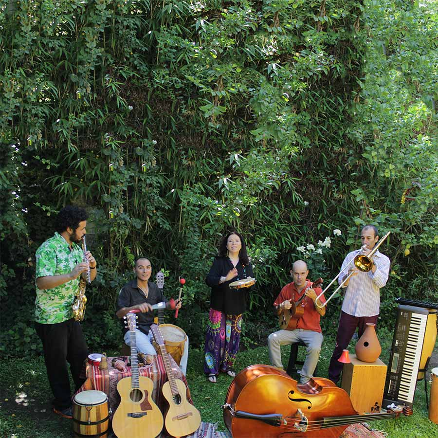

YO SOY ALA FELIZ VIOLETA
CHILE
La nieta de Violeta presentará un homenaje de fusión a su abuela y su madre Isabel.
No es reciente el vínculo de Cristina Tita Parra con la fusión y el jazz. Ya a principios de los 90, la nieta de Violeta (hija de Isabel) exploró el formato con un disco llamado La Noche tan Bella (1993) que grabó junto a músicos de Cometa y La Marraqueta. Eso explica el nombre del formato de su show tributo a Violeta en Womad Chile: Tita Parra Quinteto presentando el espectáculo Yo Soy la Feliz Violeta, tributo a su célebre abuela y también a su madre Isabel con la que empezó en el canto siendo una niña.